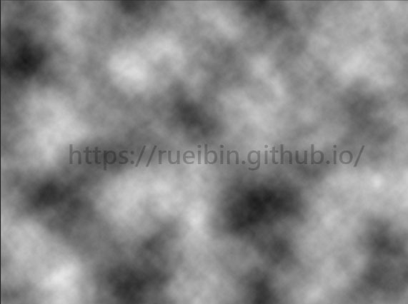
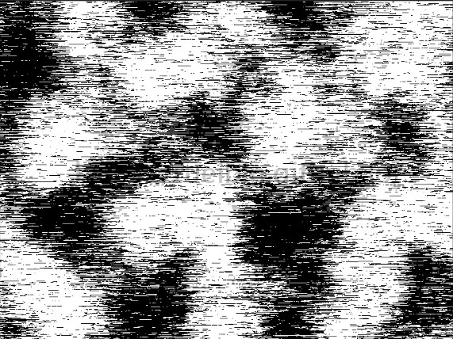
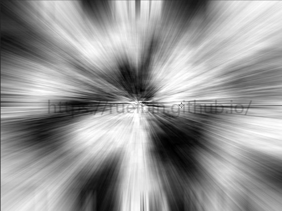
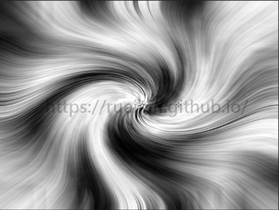
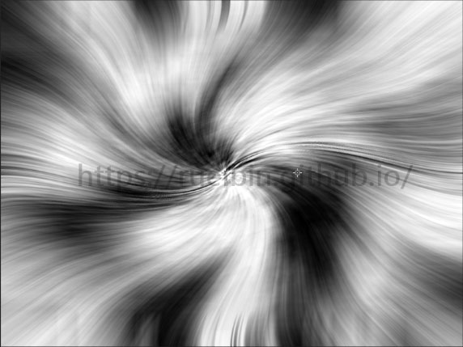
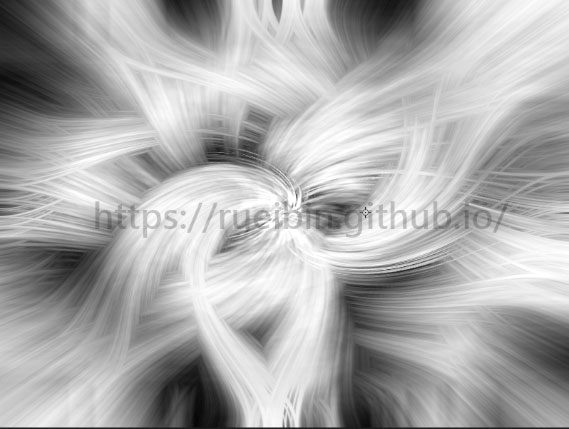
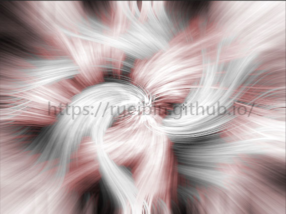
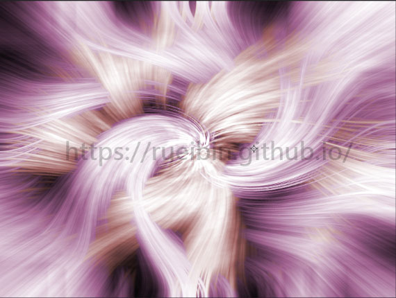

使用Photoshop來繪製奇幻圖片，使用了色相飽和度和濾鏡。
STEP 01：新增檔案
新增一個800*600像素，解析度為300像素的檔案。
STEP 02：套用雲狀效果
在套用效果之前，先確認，前景色是否為黑色?背景色是否為白?
確認結束，點選【濾鏡】/【演算上色】/【雲狀效果】。 如效果不喜歡，可以按快捷鍵【CTRL+F】重複上一個指令，可以多按幾次，選擇自己喜歡的效果。 效果如下圖。

STEP 03：套用網線銅版效果
點選【濾鏡】/【像素】/【網線銅版】。網線銅版的類型選擇"中線"。 效果如下圖。

STEP 04：套用放射狀模糊
點選【濾鏡】/【模糊】/【放射狀模糊】。"總量"輸入100，"模糊方式"選擇"縮放"，"品質"選擇"最佳"。 效果如下圖。

STEP 05：套用扭轉效果
點選【濾鏡】/【扭曲】/【扭轉效果】。"角度"輸入125度。 效果如下圖。

STEP 06：套用扭轉效果
先複製背景圖層，快捷鍵【CTRL+J】，圖層名稱為"圖層一"
點選"圖層一"套用扭轉效果，點選【濾鏡】/【扭曲】/【扭轉效果】。"角度"輸入-125度。 效果如下圖。

STEP 07：套用圖層混合模式：變亮
點選"圖層一"，選擇"圖層混合模式"的"變亮"效果。 效果如下圖。

STEP 08：調整色相飽和度
點選"圖層一"， 點選【影像】/【調整】/【色相飽和度】，快捷鍵【CTRL+U】。 先點選"上色"。色相輸入0，飽和度輸入25，明亮輸入0 效果如下圖。

STEP 09：調整色相飽和度
點選"背景圖層"， 點選【影像】/【調整】/【色相飽和度】，快捷鍵【CTRL+U】。 先點選"上色"。色相輸入315，飽和度輸入25，明亮輸入0 效果如下圖。

STEP 10：套用遮色片銳利調整
先將"背景圖層"和"圖層一"合併成一個圖層。
點選【濾鏡】/【銳利化】/【遮色片銳利調整】，"總量"輸入400，"強度"輸入0.5，"臨界值"輸入0。 效果如下圖。